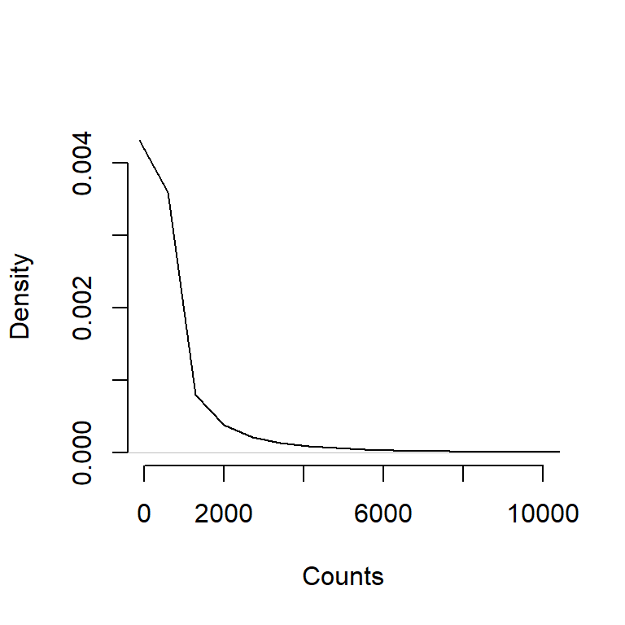
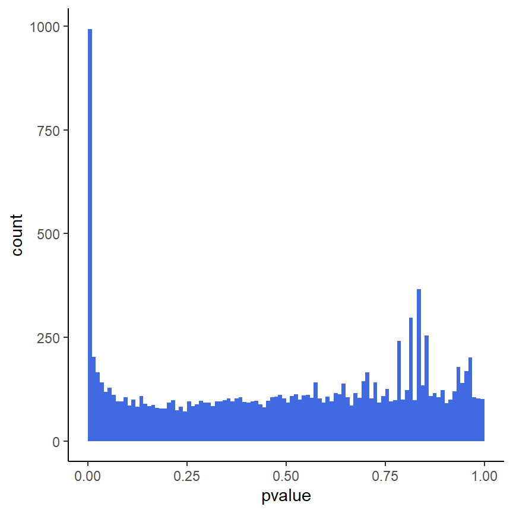
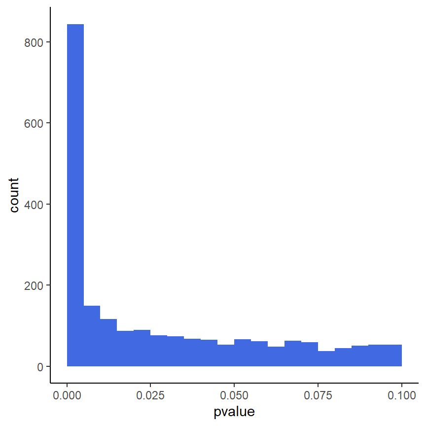
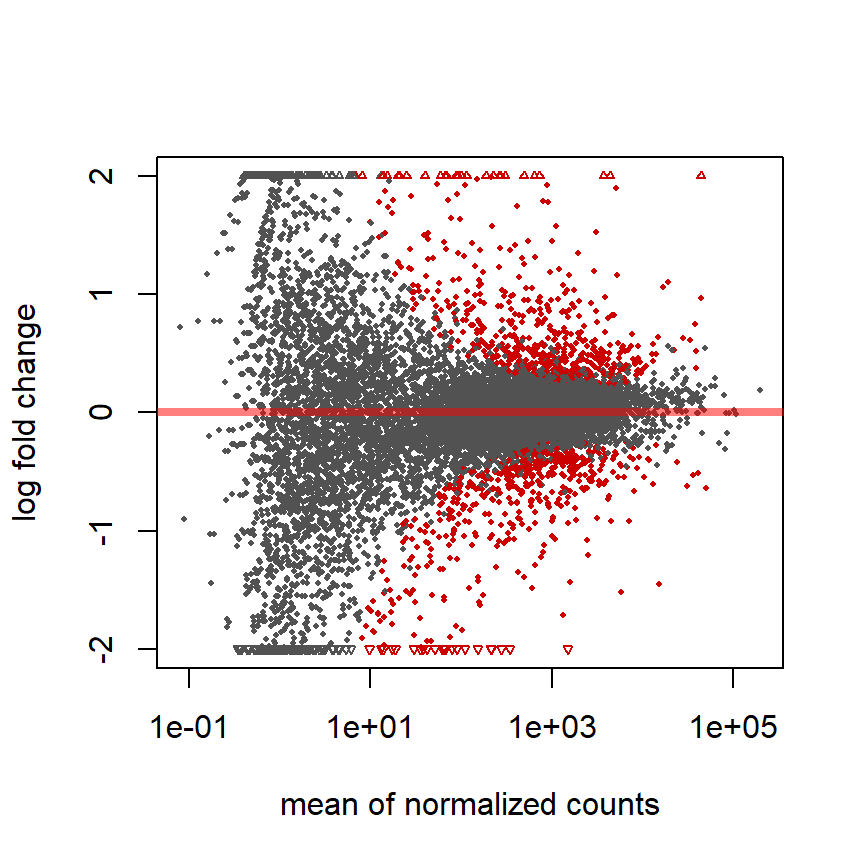
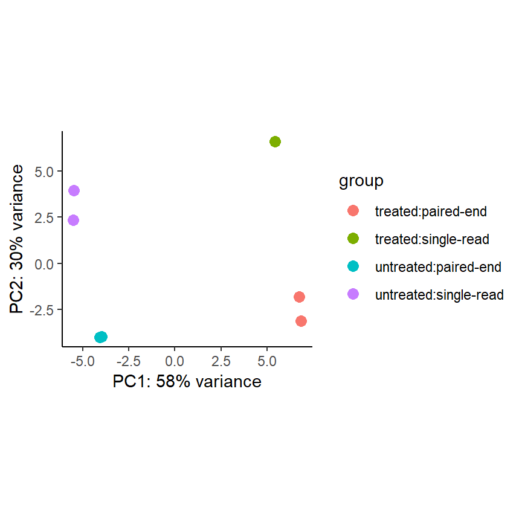
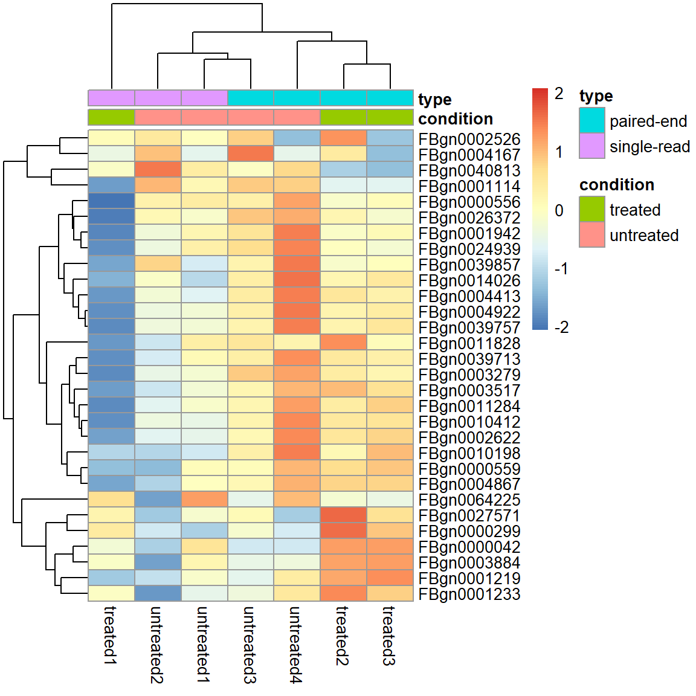
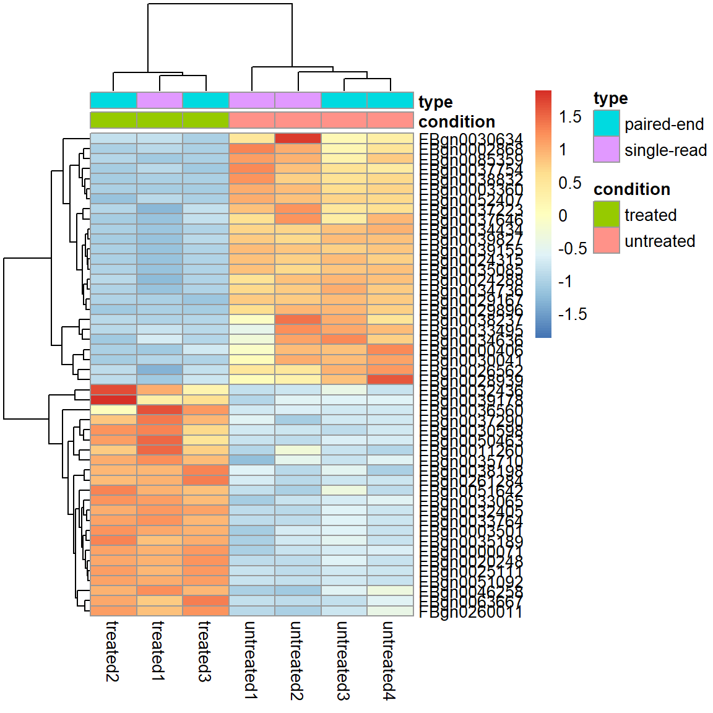

Andreas Mock
16.06.2020
Das Kursmaterial des heutigen Tages entspricht in großen Teilen Kapitel 8 des hervorragenden Buchs Modern Statistics for Modern Biology von Susan Holmes und Wolfgang Huber.
An diesem Kurstag möchten wir uns mit der Auswertung von Daten aus einer RNA Sequenzierung (RNA-seq) beschäftigen.
RNA-seq Daten sind so genannte high-throughput count Daten, in denen wir in vielen parallelen Analysen zählen, wieviele reads pro Gen oder Transkript im Sample detektiert wurden.
Zeitliche Abfolge: 1. Sequenzierung > 2. Counting
pasilla: Paket, welches die Bespieldaten enthältDESeq2: DAS Paket für die Analyse von RNA-seq Datenpheatmap: Paket zur Erstellung von Heatmaps (sehr gute Alternative ComplexHeatmap Paket)broom: Paket für ErgebnisstabellenUnseren Bespieldatensatz beziehen wir aus dem Paket pasilla
fn <- system.file("extdata", "pasilla_gene_counts.tsv",
package = "pasilla", mustWork = TRUE)
counts <- as.matrix(read.csv(fn, sep = "\t", row.names = "gene_id"))Sequenzierungsdaten sollten als Matrix gespeichert sein und nicht als Dataframe bzw. Tibble!
## [1] 14599 7## untreated1 untreated2 untreated3 untreated4 treated1 treated2
## FBgn0000003 0 0 0 0 0 0
## FBgn0000008 92 161 76 70 140 88
## FBgn0000014 5 1 0 0 4 0
## treated3
## FBgn0000003 1
## FBgn0000008 70
## FBgn0000014 0Diese Matrix wird auch count table genannt. Wir haben Countdaten zu 14,599 Genen von 7 Samples. Hierbei handelt es sich um die “raw” Counts.

RNAi Knockdown Experiment des Splicingfaktors pasilla in D. melanogaster. Zwei Konditionen: treated und untreated. Den Annotationfile laden wir mit:
annotationFile <- system.file("extdata",
"pasilla_sample_annotation.csv",
package = "pasilla", mustWork = TRUE)
pasillaSampleAnno <- readr::read_csv(annotationFile)
pasillaSampleAnno <- mutate(pasillaSampleAnno,
condition <- factor(condition, levels = c("untreated", "treated")),
type <- factor(sub("-.*", "", type), levels = c("single", "paired")))## # A tibble: 7 x 8
## file condition type `number of lane~ `total number o~ `exon counts`
## <chr> <chr> <chr> <dbl> <chr> <dbl>
## 1 trea~ treated sing~ 5 35158667 15679615
## 2 trea~ treated pair~ 2 12242535 (x2) 15620018
## 3 trea~ treated pair~ 2 12443664 (x2) 12733865
## 4 untr~ untreated sing~ 2 17812866 14924838
## 5 untr~ untreated sing~ 6 34284521 20764558
## 6 untr~ untreated pair~ 2 10542625 (x2) 10283129
## 7 untr~ untreated pair~ 2 12214974 (x2) 11653031
## # ... with 2 more variables: `condition <- factor(condition, levels =
## # c("untreated", "treated"))` <fct>, `type <- factor(sub("-.*", "", type),
## # levels = c("single", "paired"))` <fct>## type
## condition paired-end single-read
## treated 2 1
## untreated 2 2Das DESeq2 gehört zu den weltweit meist genutzen Pakten zur Analyse von RNA-seq Datensätzen.
Bevor wir mit der Analyse starten können, gilt es aus der Matrix counts und dem Dataframe der die Sampleinfo beschreibt pasillaSampleAnno ein sogenanntes DESeqDataSet zu erstellen:
mt <- match(colnames(counts), sub("fb$", "", pasillaSampleAnno$file))
stopifnot(!any(is.na(mt)))
pasilla <- DESeqDataSetFromMatrix(
countData = counts,
colData = pasillaSampleAnno[mt, ],
design = ~ condition)## class: DESeqDataSet
## dim: 14599 7
## metadata(1): version
## assays(1): counts
## rownames(14599): FBgn0000003 FBgn0000008 ... FBgn0261574 FBgn0261575
## rowData names(0):
## colnames(7): untreated1 untreated2 ... treated2 treated3
## colData names(8): file condition ... condition <- factor(condition,
## levels = c("untreated", "treated")) type <- factor(sub("-.*", "",
## type), levels = c("single", "paired"))Ziel: Gene identifizieren, die zwischen treated und untreated Samples unterschiedlich sind. Wir wenden hier einen Hypothesentest an, der mit dem t-Test mathematisch verwandt ist.
## class: DESeqDataSet
## dim: 14599 7
## metadata(1): version
## assays(4): counts mu H cooks
## rownames(14599): FBgn0000003 FBgn0000008 ... FBgn0261574 FBgn0261575
## rowData names(22): baseMean baseVar ... deviance maxCooks
## colnames(7): untreated1 untreated2 ... treated2 treated3
## colData names(9): file condition ... type <- factor(sub("-.*", "",
## type), levels = c("single", "paired")) sizeFactorResults
## log2 fold change (MLE): condition untreated vs treated
## Wald test p-value: condition untreated vs treated
## DataFrame with 6 rows and 6 columns
## baseMean log2FoldChange lfcSE
## <numeric> <numeric> <numeric>
## FBgn0039155 730.595806139728 4.619013535193 0.168706755496974
## FBgn0025111 1501.41051323996 -2.89986418283187 0.126920467532813
## FBgn0029167 3706.11653071978 2.19700028710382 0.0969888689039936
## FBgn0003360 4343.03539692487 3.17967242210135 0.143526226262858
## FBgn0035085 638.232608936723 2.56041205175815 0.137295199514033
## FBgn0039827 261.916235943103 4.16251610026134 0.232588756794067
## stat pvalue padj
## <numeric> <numeric> <numeric>
## FBgn0039155 27.3789482915866 4.88534640286228e-165 4.06607381110228e-161
## FBgn0025111 -22.8478844996546 1.53390416993678e-115 6.38334220319191e-112
## FBgn0029167 22.6520869036895 1.33057630038134e-113 3.69146218269131e-110
## FBgn0003360 22.1539470861445 9.55682092175738e-109 1.98853551329467e-105
## FBgn0035085 18.6489553955341 1.28768628708899e-77 2.14348259348833e-74
## FBgn0039827 17.896463086334 1.25652932702639e-71 1.74301559814011e-68Im folgenden möchten wir die Results der differentiellen Expressionsanalyse mithilfe von Visualisierungen explorieren.
ggplot(as(res, "data.frame"), aes(x = pvalue)) +
geom_histogram(binwidth = 0.01, fill = "Royalblue", boundary = 0) +
theme_classic()
ggplot(as(res, "data.frame"), aes(x = pvalue)) +
geom_histogram(binwidth = 0.005, fill = "Royalblue", boundary = 0) +
xlim(c(0,0.1)) +
theme_classic()
Fold change (M-value) vs. average counts (A-value)

Roten Punkte = adjustierter P-Wert < 0.1
Die Principle Component Analysis (PCA) ist eine Methodik zur Dimensionsreduktion. Hierbei werden für jeden Sample die Infos zu allen 14,599 Genen auf zwei Dimensionen (x- und y-Achse) reduziert. Ein Sample ist ein Punkt auf dem Plot.
pas_rlog <- rlogTransformation(pasilla)
plotPCA(pas_rlog, intgroup=c("condition", "type")) +
coord_fixed() +
theme_classic()
Eine Heatmap aller Gene darzustellen macht keinen Sinn. Es gilt Filterkriterien zu definieren.
Filter 1) Top 30 most expressed genes.
select <- order(rowMeans(assay(pas_rlog)), decreasing = TRUE)[1:30]
pheatmap( assay(pas_rlog)[select, ],
scale = "row",
annotation_col = as.data.frame(
colData(pas_rlog)[, c("condition", "type")] ))
Filter 2) Adjusted p-Value < 0.01 und absolute log2 Fold Change > 2
select2 <- (res$padj<0.01 & abs(res$log2FoldChange)>2)*1
pheatmap( assay(pas_rlog)[select2 %in% 1, ],
scale = "row",
annotation_col = as.data.frame(
colData(pas_rlog)[, c("condition", "type")] ))
Die Übung des heutigen Tages besteht im Ausführen und Nachvollziehen des R Codes der Slides.